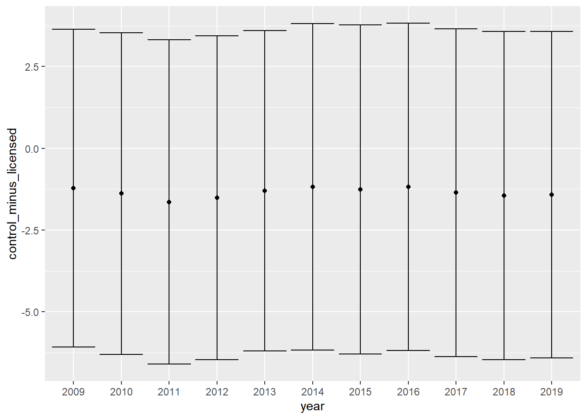

Analysis
Tax differences by jurisdiction group
# tax
year = colnames(tax_df_group)[-c(1:3)]
t_test_output = NULL
for (i in 1:length(year)) {
t_test = t.test(tax_df_group[[year[i]]]~group, data = tax_df_group) %>% broom::tidy()
t_test_output = rbind(t_test_output, t_test)
}
t_test_output %>%
mutate(year = year) %>%
relocate(year) %>%
rename(
control_est = estimate1,
licensed_est = estimate2,
control_minus_licenced = estimate) %>%
select(year, control_minus_licenced, p.value, conf.low, conf.high)
## # A tibble: 12 x 5
## year control_minus_licenced p.value conf.low conf.high
## <chr> <dbl> <dbl> <dbl> <dbl>
## 1 2008 -1685. 0.556 -7401. 4031.
## 2 2009 -1531. 0.596 -7312. 4251.
## 3 2010 -1278. 0.686 -7623. 5066.
## 4 2011 -1116. 0.757 -8354. 6122.
## 5 2012 -898. 0.807 -8258. 6463.
## 6 2013 -757. 0.841 -8349. 6835.
## 7 2014 -3659. 0.424 -12791. 5472.
## 8 2015 -170. 0.982 -15573. 15233.
## 9 2016 489. 0.967 -22908. 23885.
## 10 2017 1665. 0.912 -28563. 31892.
## 11 2018 501. 0.977 -34756. 35759.
## 12 2019 182. 0.993 -41063. 41427.State/local tax differences by jurisdiction group
State
# state_tax
state_tax_group_result =
state_tax_df_group %>%
nest(data = -year) %>%
mutate(
t_test = map(.x = data, ~t.test(state_taxes ~ group, data = .x)),
result = map(t_test, broom::tidy)
) %>%
select(year, result) %>%
unnest(result) %>%
rename(control_est = estimate1,
licensed_est = estimate2,
control_minus_licensed = estimate) %>%
select(year, control_minus_licensed, p.value, conf.low, conf.high) %>%
janitor::clean_names()
#data = state_tax_df_group %>% filter(year == "2009") %>% select(state_taxes, group)
#t.test(state_taxes ~ group, data = data)
state_tax_group_result %>%
mutate(year = as.character(year)) %>%
ggplot(aes(x = year, y = control_minus_licensed)) +
geom_point() +
geom_errorbar(aes(ymin = conf_low, ymax = conf_high))
Local
# local_tax
local_tax_group_result =
state_tax_df_group %>%
rename(local_taxes = and_local_taxes) %>%
nest(data = -year) %>%
mutate(
t_test = map(.x = data, ~t.test(local_taxes ~ group, data = .x)),
result = map(t_test, broom::tidy)
) %>%
select(year, result) %>%
unnest(result) %>%
rename(control_est = estimate1,
licensed_est = estimate2,
control_minus_licensed = estimate) %>%
select(year, control_minus_licensed, p.value, conf.low, conf.high) %>%
janitor::clean_names()
local_tax_group_result %>%
mutate(year = as.character(year)) %>%
ggplot(aes(x = year, y = control_minus_licensed)) +
geom_point() +
geom_errorbar(aes(ymin = conf_low, ymax = conf_high))